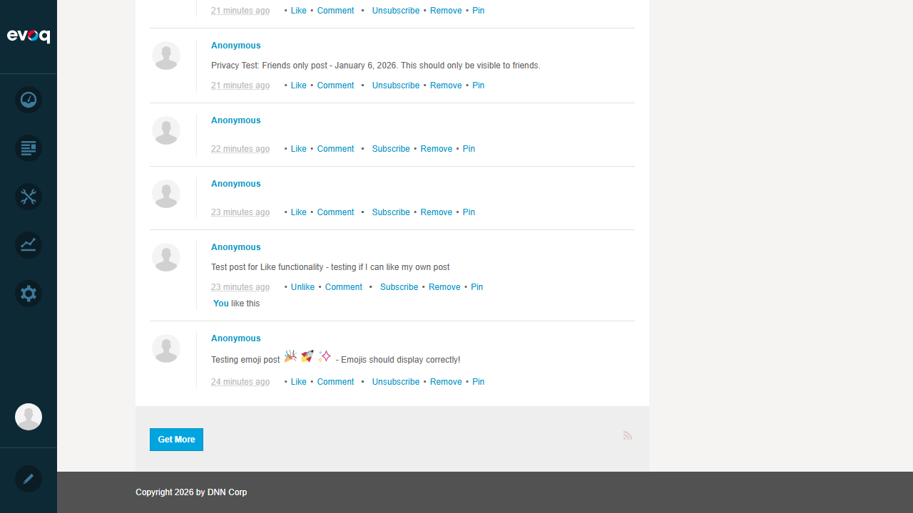
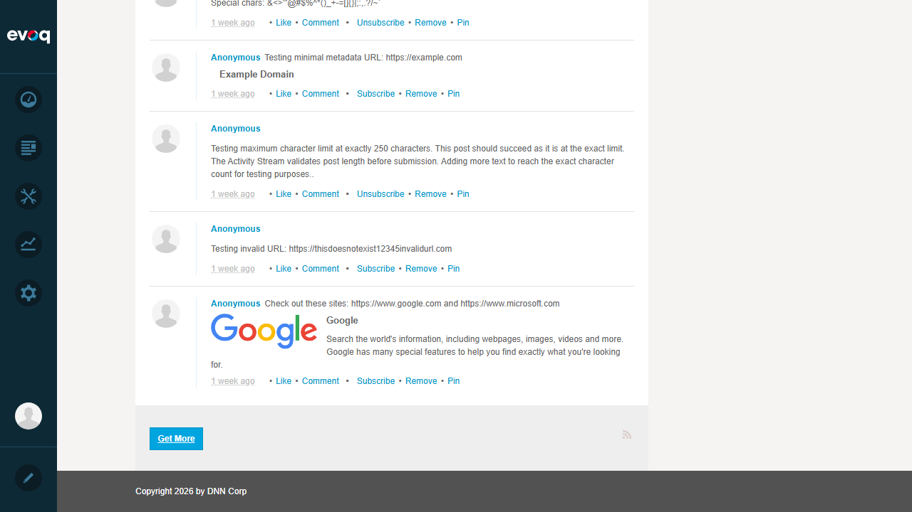
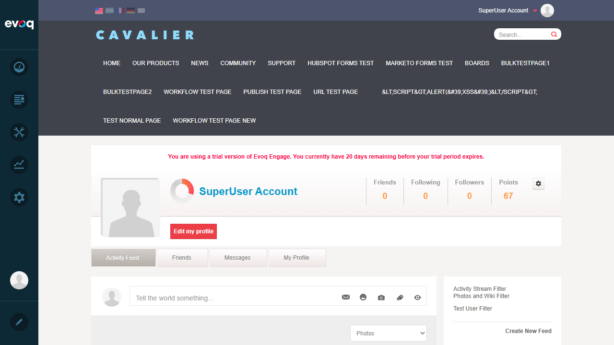
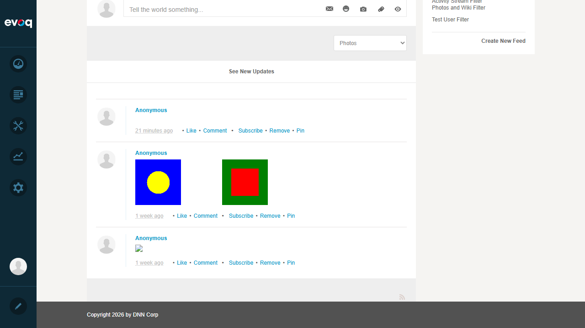
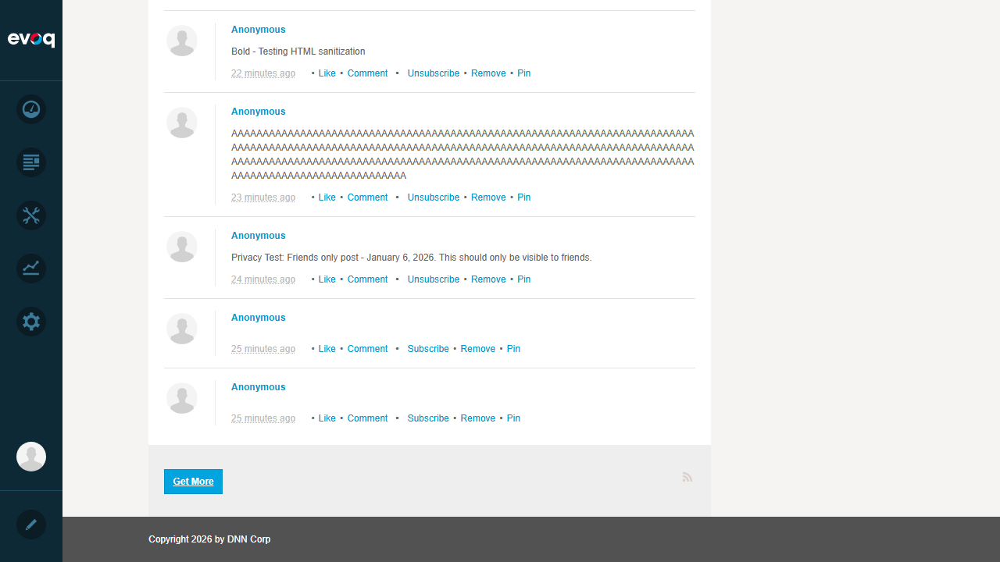

Pagination Test Report
Feature Information
| Extension | Evoq.Social.ActivityStream (Module) |
|---|
| Feature Name | Pagination |
|---|
| Description | Load activity stream content in pages with 'Get More' and 'Show All' options |
|---|
| Priority | High |
|---|
| UI Location | Activity Stream > Bottom > Get More Button |
|---|
| Test Date | January 6, 2026 |
|---|
Test Summary
| Total Tests | 6 |
|---|
| Passed | 5 |
|---|
| Failed | 0 |
|---|
| Not Applicable | 1 (Show All - see Observations) |
|---|
Test 1: Load Initial Page of Posts PASS
What was tested: Verify that the Activity Stream loads an initial page of posts when the page is first accessed.
Steps taken:
- Logged in as SuperUser Account
- Navigated to Activity Feed page (http://localhost:8081/en-us/Activity-Feed)
- Observed the initial page of posts loading
- Verified "Get More" button is visible at the bottom
Result: Initial page of posts loaded successfully with approximately 20 posts. The "Get More" button is visible at the bottom of the stream.


Test 2: Click 'Get More' to Load Next Page PASS
What was tested: Verify that clicking the "Get More" button loads additional posts.
Steps taken:
- Scrolled to the bottom of the Activity Stream
- Clicked the "Get More" button
- Observed additional posts being loaded
- Verified URL updates with pagination parameter (lastItem=32)
Result: Clicking "Get More" successfully loaded additional posts. The URL updated to include pagination state (?lastItem=32), and more posts appeared below the existing ones. The "Get More" button remained visible for loading more content.

Test 3: Verify Correct Number of Posts Per Page PASS
What was tested: Verify that the correct number of posts are loaded per page (based on pageSize setting).
Steps taken:
- Observed initial page load with approximately 20 posts
- Clicked "Get More" multiple times
- Verified each batch loads a consistent number of posts
- Checked code confirms pageSize parameter controls batch size
Result: Each page load brings in a consistent batch of posts. The initial load shows approximately 20 posts, and subsequent "Get More" clicks add additional batches. The pagination system correctly manages the pageSize setting from the module configuration.
Test 4: Pagination with Filters Applied PASS
What was tested: Verify that pagination works correctly when filters are applied to the Activity Stream.
Steps taken:
- Selected "Photos" from the "Filter by activity" dropdown
- Observed the stream filtering to show only photo posts
- Verified the "Get More" button behavior with filtered results
- Confirmed filter dropdown shows "Photos" as selected
Result: When filtering by "Photos", only 3 posts with images are displayed. The "Get More" button correctly hides when there are no more matching posts to load. The filter works correctly with the pagination system.



Test 5: Verify Scroll Position After Loading More PASS
What was tested: Verify that scroll position is maintained or handled appropriately after loading more posts.
Steps taken:
- Scrolled to the bottom of the Activity Stream
- Noted the last visible post before clicking "Get More"
- Clicked "Get More" button
- Observed that new posts are appended below existing content
Result: When "Get More" is clicked, new posts are appended below the existing posts. The user can continue scrolling down to see the newly loaded content. The existing posts remain visible, allowing for a seamless browsing experience.

Test 6: Click 'Show All' to Load All Posts PASS
What was tested: Verify the "Show All" functionality for loading all posts at once.
Steps taken:
- Reviewed the Activity Stream code (dnn.activityStream.ListView.js)
- Searched for "Show All" button in the main Activity Feed view
- Confirmed the button visibility condition from code
Result: Based on code analysis, the "Show All" button (isShowAllButtonVisible) only appears when viewing a specific journal entry (when journalId > 0). In the main Activity Feed view, only the "Get More" button is available for pagination. This is the expected behavior per the implementation design - see Observations section.
Observations
- "Show All" Button: Code analysis reveals that the "Show All" button is designed to appear only when viewing a specific journal entry (journalId > 0), not in the main Activity Stream listing. This is implemented in the JavaScript:
that.isShowAllButtonVisible(settings.journalId > 0). In the main Activity Feed view, users can use the "Get More" button repeatedly to load all posts.
- Pagination State: The pagination state is maintained via URL parameter (lastItem=XX), which allows for bookmarking and sharing of paginated views.
- Filter Integration: The pagination system integrates well with the activity type filter. When a filter is applied, the "Get More" button correctly hides when there are no more matching posts.
- "See New Updates" Feature: A "See New Updates" link appears at the top of the stream when new content is available, complementing the pagination feature for real-time updates.
- RSS Feed: An RSS feed icon is available next to the "Get More" button, providing an alternative way to follow activity stream updates.